Over three decades of delivering government and private sector projects — from mosque construction and hospital buildings to school upgrades and specialist waterproofing across Malaysia.
Completed Works
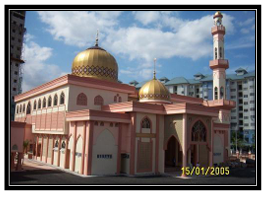
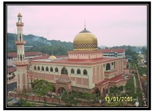
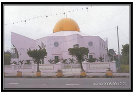
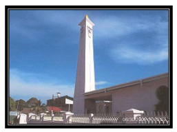
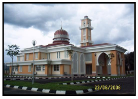
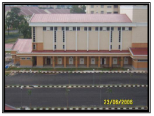
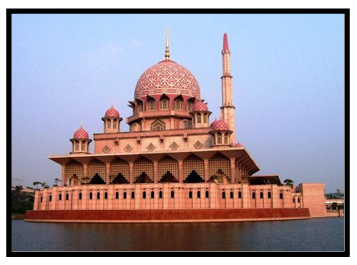
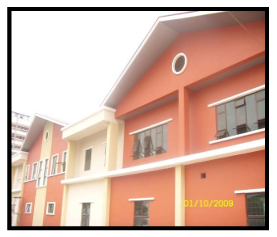
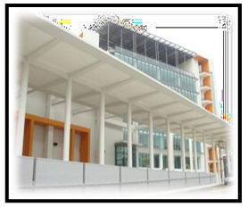
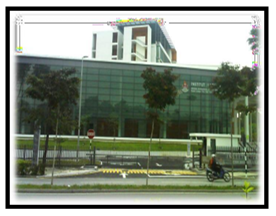
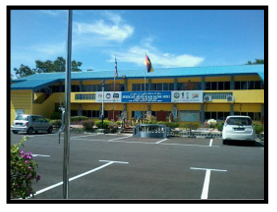
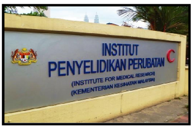
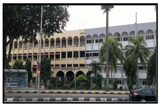
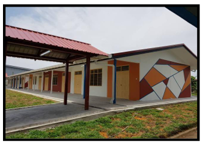
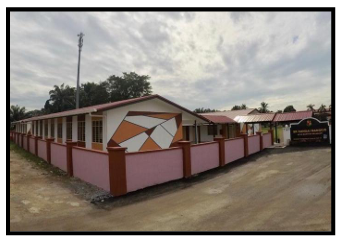
Track Record
Painting work at Season Building, Petaling Jaya
1989Construction of Telekom Training Centre
1989Roadwork at Telekom Ibukota, Bangsar
1989Consortium Beaufurn and Probil — Consortium between Teamcoat, Beaufurn and Probil
1994Renovation, Electrical, Fire Fighting, Air-Cond Installation — Kuala Lumpur and Various States
1994Renovation, Partition Ceiling and Electrical Installation at Wisma KWSG
1994Cadangan Kerja-Kerja Baik Pulih Rumah-Rumah Tetamu di Intan Bukit Kiara, Kuala Lumpur
1997Kerja-Kerja Membaiki Kerosakan Dan Mengecat Semula Asrama Putera, Asrama Puteri, Dewan di Kolej Islam Sultan Alam Shah, Klang
1998Cadangan Membina dan Menyiapkan Pencawang Pembahagian Utama 33/11kv di Universiti Malaya
1998Cadangan Membina dan Menyiapkan Masjid di Bandar Tasek Selatan, Cheras, Kuala Lumpur
2002–2003Menaik Taraf Loji Sistem Pembentungan — Kem Wardieburn, 3 Blok Kuarters Kelas G (336 Unit) dan Kerja-Kerja Berkaitan (Pakej 1)
2004Cadangan Blok Jabatan Kecemasan Baru, Hospital Tengku Ampuan Rahimah, Klang, Selangor
2007–2008Membaik Pulih Blok Bangunan Sekolah Dua (2) Tingkat Yang Terbakar — SMK Bedong, Kuala Muda, Kedah
2010Projek Baik Pulih Kerosakan Bangunan di Sekolah Menengah Sains Miri, Sarawak
2011–2013Kerja-Kerja Pembaikan dan Menaik Taraf Bangunan Utama Institut Penyelidikan Perubatan (IMR) Kuala Lumpur
2013–2015Kerja-Kerja Penggantian 24 Unit Lif Dan Lain-Lain Kerja Berkaitan Di Batallion 4 PGA Semenyih, Selangor
2024Kerja Penggantian Tujuh Belas (17) Unit Lif di Kompleks Kediaman Kakitangan Awam (Kka) Jalan U-Thant, Kuala Lumpur
2025Expansion Joint at President House
1989Petronas PRI, Ulu Klang
1989Empangan Kenyir, Terengganu
1989LLN Power Station Coonaught Bridge, Klang, Selangor
1991Institut Teknologi MARA, Section 2, Shah Alam, Selangor
1992Wisma Peladang, Kuantan
1994Stadium Negara, Jalan Raja Muda
1993–1995Cadangan Kerja-Kerja Ubahsuai Pejabat, Kantin dan Menaiktaraf Bilik Air — Kompleks Bangunan Parlimen Malaysia, Kuala Lumpur
1996Cadangan Kerja-Kerja Pembaikan ke Atas Bangunan APDC, Jalan Persekutuan Persiaran Duta, KL
1997Cadangan Kerja-Kerja Membaiki Kebocoran di Dewan Jubli Perak, Selangor
1997Tender Kerja-Kerja Baik Pulih Rumah-Rumah Tetamu di Intan Kiara, Kuala Lumpur
1998Cadangan Kerja-Kerja Pembaikan Kebocoran di Masjid Putra, Putrajaya
2007–2010Cadangan Pelaksanaan Projek Pembaikan Struktur Bangunan Sekolah-Sekolah Kerajaan (RPK), Zon 1 — Perlis, Kedah & Pulau Pinang
2013